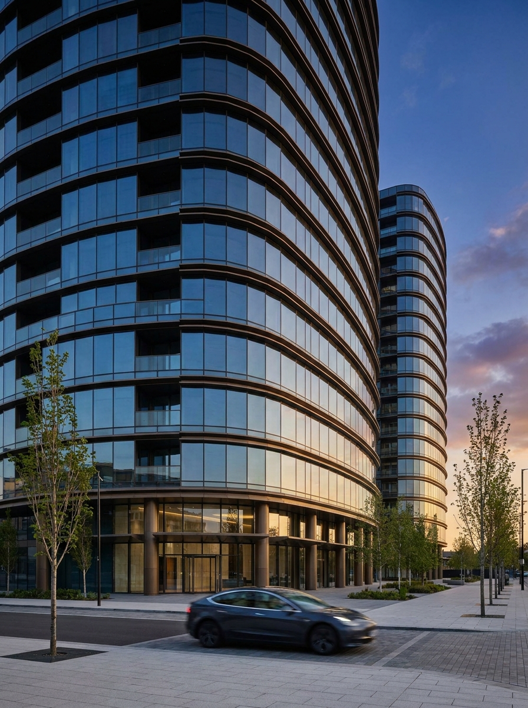

02
At the heartof the district
The street · 02
The Sela towers are set to become the quarter’s landmark — two honest silhouettes above a street that finally has somewhere to walk to. Offices above, arcades below, and the day organised around daylight.